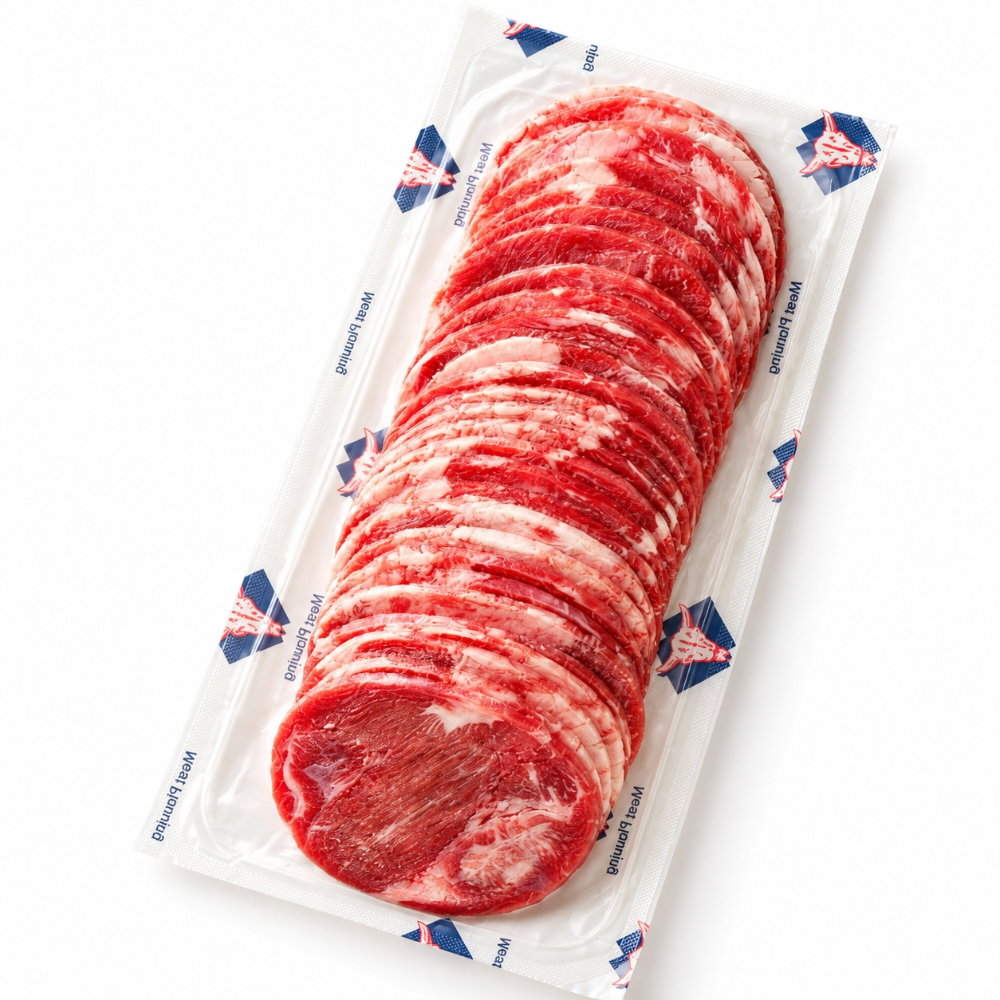

SCENE 01
M003

m 贈り物
レジェンドスライス牛タン/柔らか加工
【驚きの柔らかさ！おうちで専門店の味、絶品スライス牛タン。】
- 内容量500ｇ/ｐ
- 保存冷凍
- 産地アメリカ、カナダ、メキシコ
商品の特徴を読む
今夜はちょっと贅沢に、おうちで本格的な焼肉はいかがですか？香ばしい香りと共に立ちのぼる煙、ジュージューと焼ける音…そんな特別な食卓の主役にぴったりの『レジェンドスライス牛タン』をご紹介します。この牛タンは、丁寧に柔らか加工を施し、約2mmの絶妙な薄さにスライスしてあるのが特徴です。冷凍庫から出してサッと焼くだけで、まるで専門店で味わうような、驚くほど柔らかくジューシーな食感をお楽しみいただけます。たっぷり500g入りなので、ご家族での焼肉パーティーやBBQはもちろん、毎日の食卓のもう一品としても大活躍。牛タン丼や炒め物など、アレンジも自由自在です。冷凍で長期保存も可能なので、急な来客へのおもてなしや、大切な方への贈り物としても大変喜ばれます。この絶品スライス牛タンで、いつもの食卓をワンランク上のごちそうに変えてみませんか。笑顔あふれる美味しい時間をお届けします。
公式サイトへ移動します。価格・在庫・配送条件は移動先で最終確認してください。
SCENE 02
冷凍庫から出してサッと焼くだけで、まるで専門店で味わうような、驚くほど柔らかくジューシーな食感をお楽しみいただけます。
SCENE 03
冷凍で長期保存も可能なので、急な来客へのおもてなしや、大切な方への贈り物としても大変喜ばれます。
PRODUCT INFORMATION
購入前に確認したい商品情報
- 商品名
- レジェンドスライス牛タン/柔らか加工
- 商品規格
- 500ｇ/ｐ
- 保存方法
- 冷凍
- 原産国
- アメリカ、カナダ、メキシコ
- 製造地
- 日本
- 賞味期限
- 発送日より3ヶ月
原材料
牛肉（アメリカ、カナダ、メキシコ）、還元水飴、水あめ、さとうきび抽出液、カゼインNa（乳由来）、調味料（アミノ酸等）、pH調整剤、リン酸塩（Na）、食塩、酵母エキス、酸化防止剤（ビタミンC）、酵素
FAQ
購入前のよくあるご質問
美味しい解凍方法を教えてください。
冷蔵庫でゆっくり解凍するのがおすすめです。お急ぎの場合は、パックのまま流水解凍してください。品質を損なう可能性があるため、電子レンジでの解凍はお避けください。
「結着」とは何ですか？
牛タンの様々な部位を有効活用し、食べやすいように成型したお肉です。独自の技術で丁寧に加工しており、均一な柔らかさと美味しさをお楽しみいただけます。
MEAT PLUS OFFICIAL SHOP
【驚きの柔らかさ！おうちで専門店の味、絶品スライス牛タン。】
仕入れ・加工・梱包・発送まで自社で行うMEAT PLUSの公式オンラインショップでご注文いただけます。
公式オンラインショップで購入する